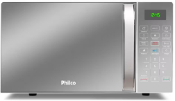
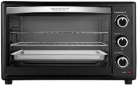
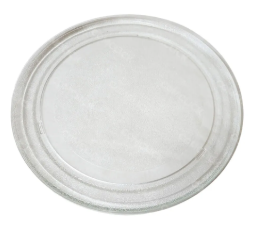
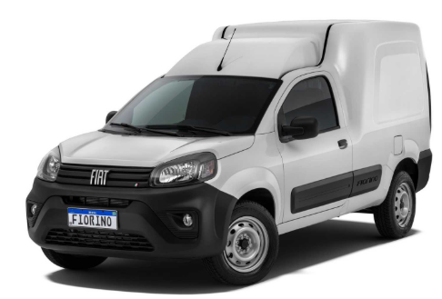

Conserto de Microondas em Curitiba e Região Metropolitana
Atendimento ágil com avaliação imediata.
Conte com estacionamento no local e um orçamento sem compromisso.
Fale conosco agora mesmo!
Serviços:

Conserto e Reforma de Micro-ondas

Conserto e Reforma de Forno Elétrico

Acessórios
